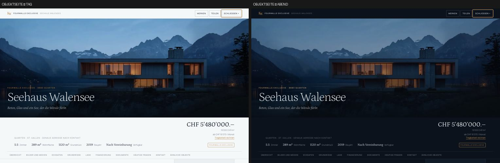
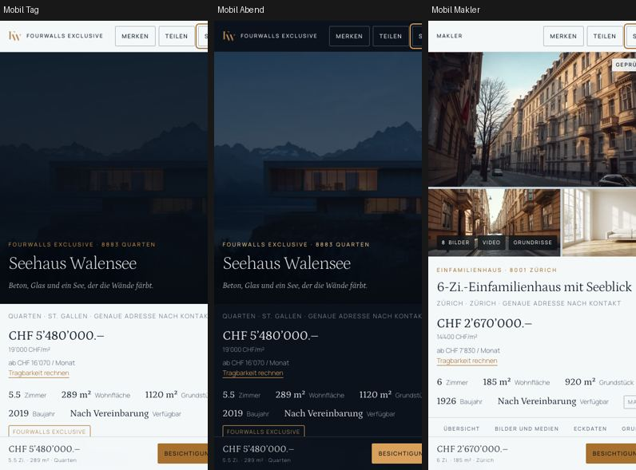
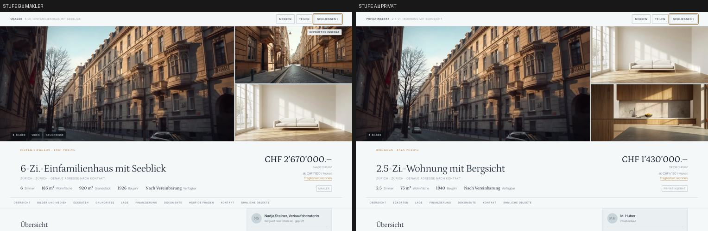

Das Turnier ist beendet, die Gestaltung eingefroren. Diese Phase hat die Informationsarchitektur festgelegt, die Navigation um die fünf Reisen geschärft und eine Objektseite gebaut, die einen ernsthaften Käufer vollständig bedient — an einem Objekt, als Referenz für alle weiteren.
UFER Design Language v1 hält Farbe, Typografie, Raster, Komponenten, die beiden Signaturen und die drei Bewegungsstufen fest. Git-Marke ufer-v1. Ab hier ändert sich Gestaltung nur noch aus einem Nutzungsgrund.
Sitemap, Navigation, Objektseiten-Architektur und Datenmodell sind festgelegt. Kern ist die Unterscheidung der fünf Reisen: suchen, verkaufen lassen, selbst inserieren, bewerten, verwalten lassen. Jeder Untereintrag der Navigation trägt eine Zeile, die genau das benennt — «Wir übernehmen den ganzen Verkauf» gegen «Sie inserieren und betreuen selbst». Vier Gruppen im Kopf, kein Mega-Menü.
Neu als eigenes Modul gebaut. Der Grundsatz ist Übersicht zuerst, Tiefe auf Abruf: Preis, Quadratmeterpreis, Monatsrate, Zimmer, Fläche, Grundstück, Baujahr, Verfügbarkeit und Quelle stehen ohne Scrollen im Bild. Alles Weitere hängt am klebenden Anker-Menü.
| Stufe | Objekt | Stationen | Bilder | Was fehlt |
|---|---|---|---|---|
| A · Privat | 2.5-Zi.-Wohnung Zürich | 7 | 3 | Medien, Grundrisse, Fragen — fehlen sauber |
| B · Makler | 6-Zi.-Einfamilienhaus Zürich | 10 | 8 | Pläne als PDF statt Zeichnung |
| C · Exclusive | Seehaus Walensee | 10 | 13 | nichts |
Zahlen wie 2840 verwaltete Einheiten, 67 Tage Vermarktungsdauer, 2.0 bis 2.9 Prozent Honorar, 1.4 Prozent Leerstand und die Verbandsmitgliedschaft standen als Tatsachen auf den Seiten. Keine davon ist belegt. Sie sind durch prüfbare Aussagen ersetzt: Erfolgshonorar, eine Ansprechperson, Belege online, vier Sprachen, kein bezahltes Ranking. Marktzahlen im Wissensteil sind jetzt als Demo gekennzeichnet.
| Quelle | Übernommen | Bewusst nicht |
|---|---|---|
| Objekttiefe | feste Stationen je Objekt, Eckdaten unter dem Titel, Monatsrate als Brücke zur Finanzierung, Merkmale in stabilen Gruppen, Dokumente gestuft | Login-Wand vor Grundrissen, dreifach wiederholter Maklerblock |
| Produktklarheit | vier Navigationsgruppen, eine Handlung je Abschnitt, erklärende Zeile je Reise, Suchabo direkt an der Suche | Aggregation fremder Portale, Werbeversprechen |
| Zurückhaltung | ein Satz, ein Suchfeld, karge Karten, Bewertung als Richtwert mit zweitem Schritt, wenige ruhige Zahlen | Layout, Schrift, Farben, Bildmotive |
| Schweizer Portale | Lückenliste für Phase 3 (Umkreis, Trefferzähler, Verfügbarkeit, Etage, Baujahr, Suchabo ohne Konto) | bezahltes Ranking, Werbung zwischen Treffern, Abos für Suchende, Einkommensabfrage im Erstkontakt |



Der Brief sieht Phase 2 als Objektdetail vor. Das ist mit diesem Durchgang bereits geliefert. Ich schlage vor, Phase 2 auf die Breite zu legen statt auf mehr Tiefe an einem Objekt:
Wenn Sie lieber beim Brief bleiben, ist der nächste sinnvolle Schritt an der Objektseite die echte Karte — sie ist die grösste verbleibende Schwäche.
Fourwalls · Phase 1 · Marken ufer-v1 und p1-produktbasis · alle Objektdaten sind fiktive Demo-Daten